Weekday afternoon · 15:00 to 18:30Start at Mitsukoshimae Station
Guide: Yuuki · 3.5 hours on foot · Dinner booked at 18:30
01The plan
We start at Mitsukoshimae Station, 15:00, photograph Nihonbashi Bridge, and eat soba twice with a parfait in between. Then we walk south through Kyobashi into Ginza: goldfish art, a bookstore, a rooftop garden, the Wako clock tower. Dinner is at LOBOS Ginza, 18:30; we arrive at 18:25.
02What GUIDE SCOUT means
★ GUIDE SCOUT marks the places I am researching for my foreign-visitor tours. At those stops we only look and take notes: entrance, tickets, crowds, photo angles.
03Check before the day
It has to be a weekday: Sobayoshi is closed on weekends and holidays. And Megumiya (16:35) is reported to serve lunch only, so call 03-3272-8616 first; if it is closed, we skip it and use the time at the fruit parlor or Hakuhinkan.
THE DAY
15:00 – 18:30
One plan, in order. Times can breathe a little; the only fixed time is 18:25 at the restaurant door.
15:00Start at Mitsukoshimae StationMeet at the station; five minutes on foot to the bridge.
Bonus if we are ahead: Hakuhinkan Toy Park, ten minutes, instead of the last part of the rooftop.
The map
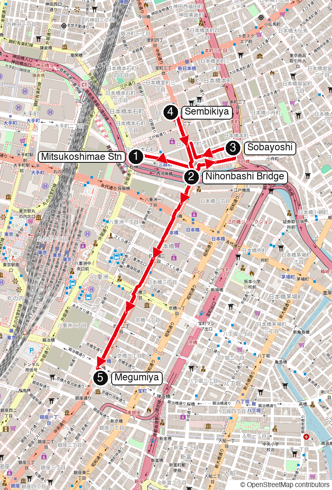
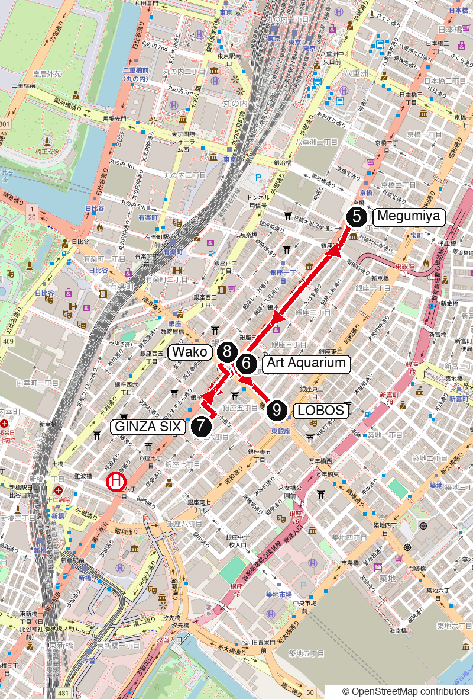
Numbers match the stops belowRed line: the walking route; the red circled H is the toy store, only if time allows
THE STOPS
2-9
02
Photo stop
NIHONBASHI BRIDGE & ROAD ORIGIN
日本橋・日本国道路元標
★ GUIDE SCOUT
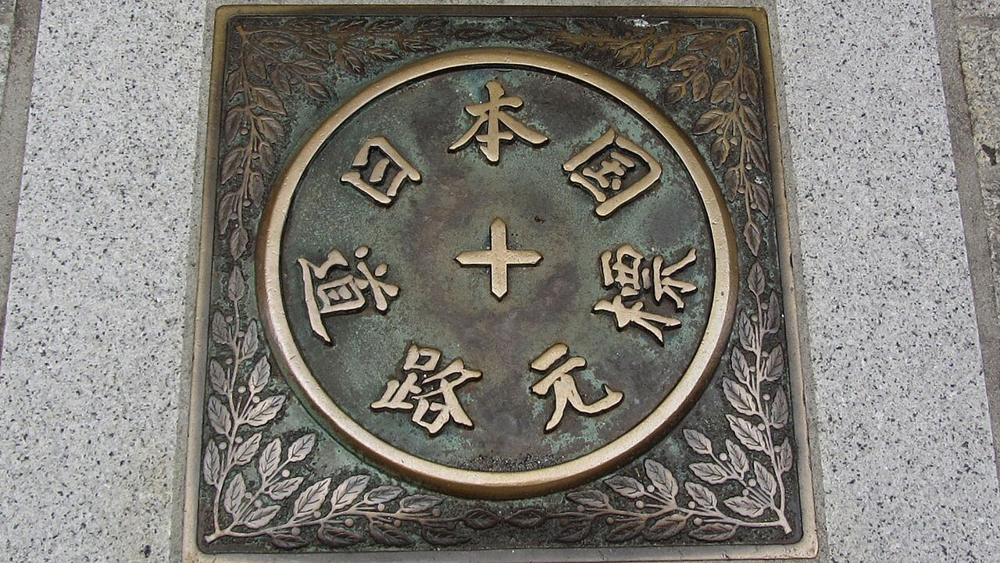
The stone bridge that started it all: in the Edo period every highway in Japan was measured from here, and the Japan Road Origin marker still sits at the centre of the bridge. Look up and you see the expressway built right over it. A five-minute photo stop; the second photo shows the Japan Road Origin plaque.
GUIDE SCOUT: check the best photo angle, how busy the pavement is, and how easy the marker is to find.
A quick counter soba shop run by an Edo-period bonito-flake wholesaler. Order soba and a bowl of rice, then shake as much freshly shaved bonito powder over the rice as you like: okaka gohan, the shop's signature. Bring an appetite; this is the proper lunch of the day.
15:15 to 15:45
Weekdays 7:30-20:00 · closed Saturday, Sunday and holidays (Yahoo! News Japan review, checked 12 Nov 2026)
Photo: pelican from Tokyo, Japan, CC BY-SA 2.0, via Wikimedia Commons. Photo: example of the dish, not the shop.
04
Fruit parfait break
SEMBIKIYA SOHONTEN FRUIT PARLOR
千疋屋総本店 日本橋本店
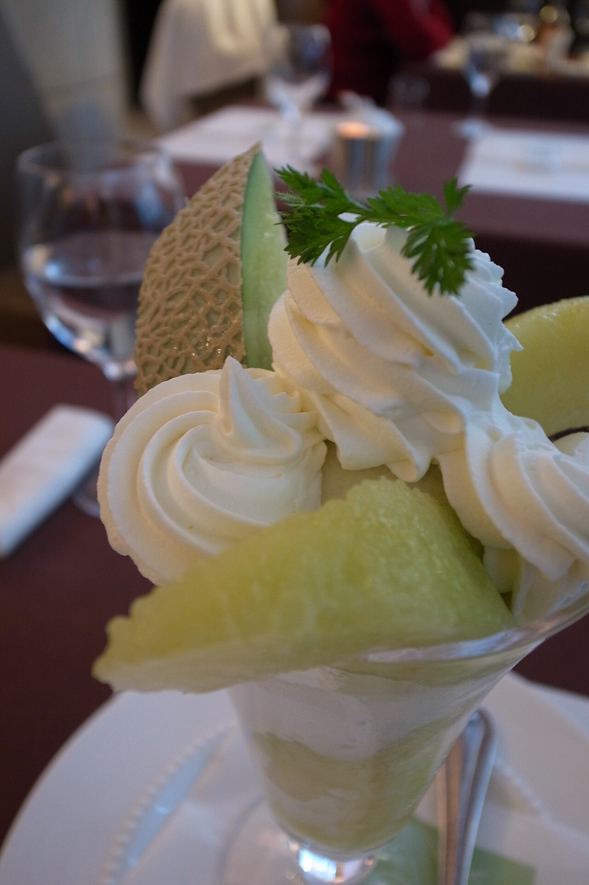
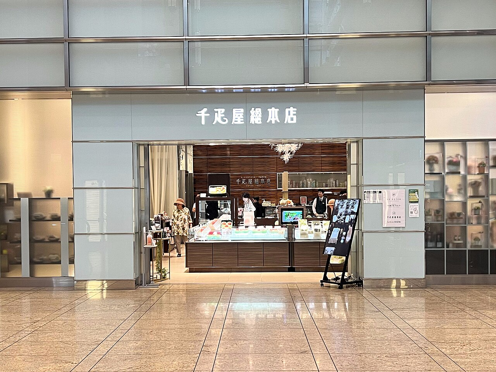
The old fruit house of Nihonbashi, and its parlor on the 2nd floor of Nihonbashi Mitsui Tower. Order the fruit parfait of the season and sit down for 25 minutes: soft seats, good fruit, a break before the second soba.
15:50 to 16:15
11:00-21:00 (last order 20:30) · Nihonbashi Mitsui Tower 2F (ikyu and Gurunavi listings, checked 12 Nov 2026)
A standing soba counter in Kyobashi known for 100%-buckwheat (juwari) noodles at a low price, with no fried food on the menu. A small bowl is enough: this is the light second round.
⚠ Hours to check: this stop may be closed at 16:35, see below.
16:35 to 16:55
CHECK BEFORE GOING: Megumiya is reported to be lunch only, 11:00-15:00, closed Saturday, Sunday and holidays (shop Instagram and sobadb, checked 12 Nov 2026). The 16:35 slot may not work: call 03-3272-8616.
Photo: spinachdip from Minamikiso, Nagano, CC BY-SA 2.0, via Wikimedia Commons. Photo: example of the dish, not the shop.
06
Goldfish art · research only
ART AQUARIUM MUSEUM GINZA
アートアクアリウム美術館 GINZA
★ GUIDE SCOUT
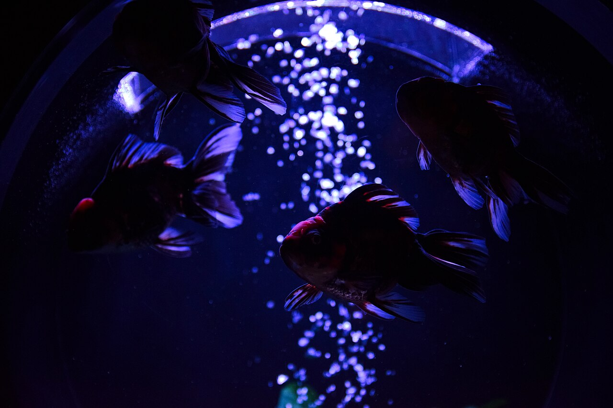
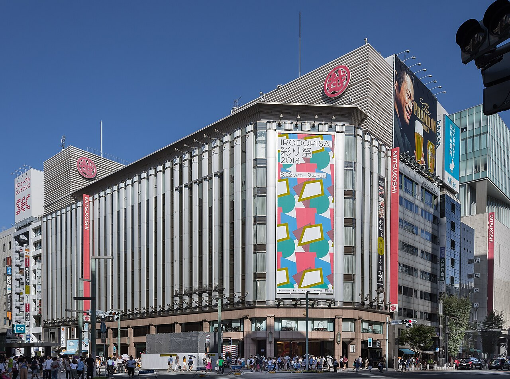
A museum of goldfish in lit, sculpted tanks, inside Ginza Mitsukoshi. We do not go in: a 15-minute look only, to check the entrance, the ticket counter and how crowded it feels at this hour. The current show, the Ginza Goldfish Hyakka exhibition, runs until 6 January 2027.
GUIDE SCOUT: entrance, ticket price and queue, crowd level at 17:10, English signs.
17:10 to 17:25
10:00-19:00 · last entry 18:00 (Fashionsnap, 1 Oct 2026; may close irregularly for maintenance)
Photo 1: Raita Futo from Tokyo, Japan, CC BY 2.0, via Wikimedia Commons. Photo 2: Kakidai, CC BY-SA 4.0, via Wikimedia Commons. Photo: an earlier Art Aquarium exhibition, not this venue.
07
Bookstore · rooftop garden
TSUTAYA BOOKS & ROOFTOP GARDEN
銀座 蔦屋書店 / GINZA SIX 屋上庭園
★ GUIDE SCOUT
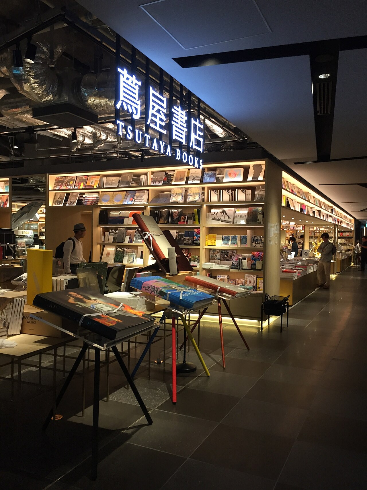
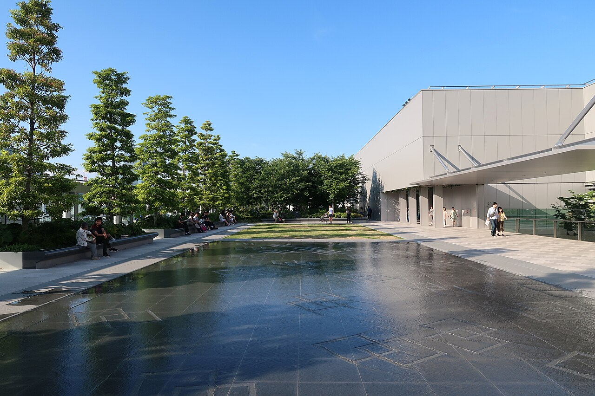
Tsutaya Books on the 6th floor of GINZA SIX: art and design books, magazines, a long hall made for browsing. Then up to the rooftop garden, about 4,000 m2 of open green space on top of the mall, with the city around it. Spend 20 minutes inside and the last few on the roof.
GUIDE SCOUT: rooftop access, view, quiet level, how it feels for a tour group at dusk.
17:35 to 18:00
Tsutaya 10:30-21:00 (rurubu listing, checked 12 Nov 2026) · Rooftop garden hours: check on the day, it is outdoors
Photo 1: Richard, enjoy my life! from 台北市, ROC Taiwan, CC BY-SA 2.0, via Wikimedia Commons. Photo 2: Wpcpey, CC BY-SA 4.0, via Wikimedia Commons.
08
Photo stop · Ginza crossing
WAKO CLOCK TOWER
和光 時計塔
★ GUIDE SCOUT
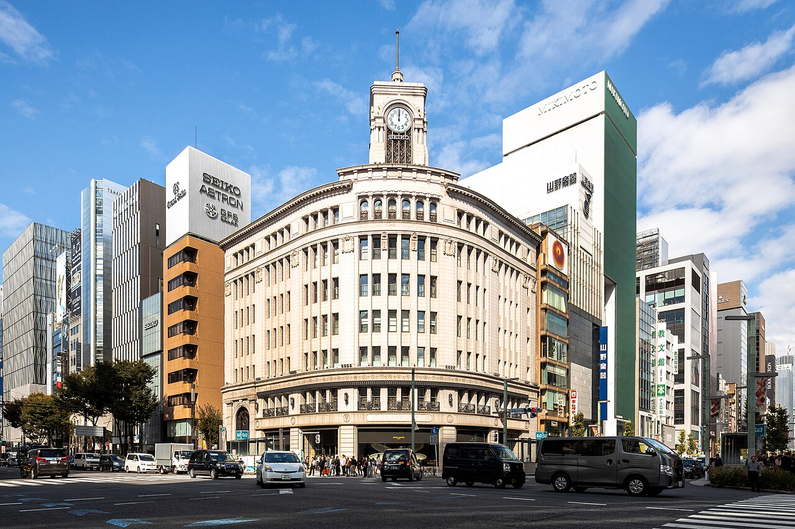
The clock tower of the Wako building is the postcard view of Ginza. We pass it on the way to dinner: stand on the corner of the Ginza 4-chome crossing, take the photo, keep walking.
GUIDE SCOUT: best corner for a group photo and how crowded the crossing is.
Photo: This Photo was taken by Supanut Arunoprayote.
Feel free to use any of my images, but please mention me as the author and may send me a message. (สามารถใช้ภาพได้อิสระ แต่กรุณาใส่เครดิตผู้ถ่ายและอาจส่งข้อความบอกกล่าวด้วย)
Please do not upload an updated image here without consultation with the Author. The author would like to make corrections only at his own source. This ensures that the changes are preserved.Please if you think that any changes should be required, please inform the author.Otherwise you can upload a new image with a new name. Please use one of the templates derivative or extract., CC BY 4.0, via Wikimedia Commons.
09
Dinner · booked
LOBOS GINZA, DINNER 18:30
LOBOS 銀座 スペイン料理&ワイン
Spanish food and wine, a few minutes' walk from the Ginza crossing towards Higashi-Ginza. Table booked for 18:30; we arrive at 18:25. Address: Ginza 4-9-6, Mihara-bashi Building 1F.
18:25 arrive
Dinner from 17:00; closing days listed differently by Retty and ikyu, so the booking is the thing that matters. Tel 03-5148-2688 (ikyu).
A big toy store in Ginza 8-chome, about five minutes west of GINZA SIX: the opposite way from dinner. We go only if we leave the rooftop early; otherwise it is a wave from the pavement.
Optional detours, not on the timeline. The 18:25 arrival at LOBOS does not change: pick one or two only if we are ahead of time. A = first choice, B = second choice. Hours marked CHECK ON THE DAY could not be confirmed.
A
Near the start · Egg sandwich
HAMANOYA PARLOR
はまの屋パーラー 日本橋本店
A classic-style kissaten in the basement of the Yagicho Building, one minute from Mitsukoshimae. The egg sandwich follows the first owner's recipe; a half-and-half of egg and fruit sandwich is on the menu. A quiet, old-fashioned coffee break before the walk.
9:00-18:00, last order 17:30 · Nihonbashi Muromachi 1-7-2, B1F · Closed days not confirmed: check on the day
Source: Time Out Tokyo, 20 Nov 2023 article, read 12 Nov 2026
No freely licensed photo exists, so none is shown.
A
Near the start · Bonito flakes
NINBEN NIHONBASHI
にんべん 日本橋本店
A bonito-flake house from the Edo period, on the ground floor of COREDO Muromachi 1. Buy a pack of freshly shaved flakes or dashi packs: light, cheap, easy to carry home, and very Japanese. The Dashi-ba counter next door serves bonito broth.
Shop 11:00-19:00 weekdays, 10:30 on weekends · Dashi-ba counter reported 11:00-18:00: check on the day
Source: Mitsui Shopping Park COREDO Muromachi store page; san-tatsu.jp
No freely licensed photo exists, so none is shown.
A
Near the start · Shrine + garden
FUKUTOKU SHRINE & FUKUTOKU NO MORI
福徳神社・福徳の森
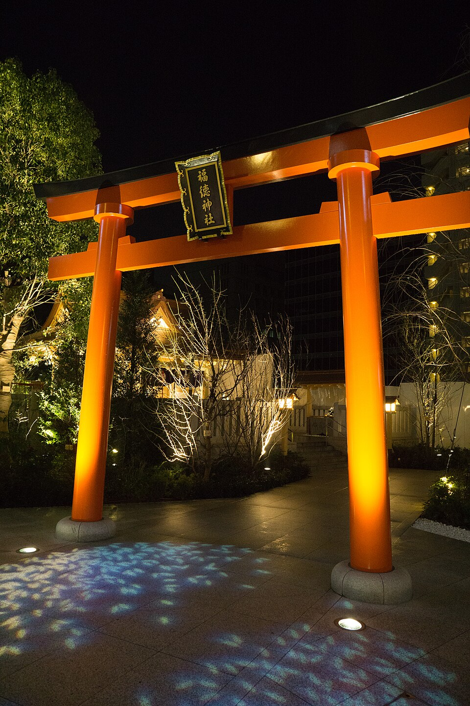
A small shrine said to be here since the 9th century, now tucked behind COREDO Muromachi with a little garden beside it. A calm five minutes between the glass towers; the amulet office sells lottery-luck charms and goshuin stamps.
Grounds are outdoors: hours not published, check on the day · Amulet office 10:00-17:00
Source: Shrine official site mebuki.jp, read 12 Nov 2026
A Ginza coffee house open since 1936, with a revolving door at the entrance and a Showa-era room. Order the small, light eclair or the milk coffee: a proper old kissaten stop for a visitor who wants the real thing.
8:00-19:00, last order 18:30; closed Tuesday (Gurunavi). Another listing says no closed day: CHECK ON THE DAY, tel 03-3571-1811 · Ginza 5-9-17
Source: Gurunavi r.gnavi.co.jp; san-tatsu.jp (updated Feb 2023)
Japan's best-known stationery store, a 12-floor flagship on Chuo-dori. Pens, notebooks, washi and postcards make easy, light souvenirs, and the staff are used to visitors. There is a cafe on the 12th floor.
Mon-Sat 10:00-20:00, Sun and holidays 10:00-19:00 · No regular closed day · Ginza 2-7-15
Source: Itoya official site ito-ya.co.jp (store page and FAQ)
A coffee-only shop with the year 1948 on its sign: hand-drip, own roast, aged beans. It is small and serious about coffee, so go for one cup, not a long stay. Ginza 8-chome, on the Hakuhinkan side.
Listings disagree on hours and closed day (Tuesday on HotPepper, Monday on Tabelog): CHECK ON THE DAY, tel 03-3571-1551 · Ginza 8-10-15
Source: HotPepper (updated Feb 2020); Tabelog English page
A rice-cracker house with a long Ginza history, known for crackers printed with pictures. Light, flat and cheap: a good souvenir. The main store moved in May 2026 to a new place in Ginza 3-chome on the same street.
New store hours and exact address not confirmed: CHECK ON THE DAY (shop tel 03-6264-6703)
Source: PR TIMES release on the 7 May 2026 opening
No freely licensed photo exists, so none is shown.
PHOTO CREDITS
All photos are real photographs from Wikimedia Commons. Where no photo of the shop itself is free to use, the card says so and shows an example of the dish instead. LOBOS, Hamanoya Parlor, Ninben and Matsuzaki Senbei have no photo: no freely licensed image exists.
hero: Nihonbashi 12.jpg, Aimaimyi, CC BY-SA 3.0, via Wikimedia Commons
origin: 日本国道路元標.jpg, Puchi-masashi, CC BY-SA 4.0, via Wikimedia Commons
sembikiya: Sembikiya Fruits Nihonbashi main strore (1) 2026-07-19.jpg, Asanagi, CC0, via Wikimedia Commons
parfait: Melon Parfait, Senbikiya (6639281023).jpg, Naotake Murayama from San Francisco, CA, USA, CC BY 2.0, via Wikimedia Commons
soba2: Maitake soba noodle (5539374215).jpg, pelican from Tokyo, Japan, CC BY-SA 2.0, via Wikimedia Commons
aqua: Tokyo Goldfish exhibition (46190195954).jpg, Raita Futo from Tokyo, Japan, CC BY 2.0, via Wikimedia Commons
mitsukoshi: Ginza Mitsukoshi 2018.jpg, Kakidai, CC BY-SA 4.0, via Wikimedia Commons
tsutaya: 銀座 蔦屋書店 (24705655427).jpg, Richard, enjoy my life! from 台北市, ROC Taiwan, CC BY-SA 2.0, via Wikimedia Commons
roof: GINZA SIX Roof Garden 201806.jpg, Wpcpey, CC BY-SA 4.0, via Wikimedia Commons
wako: Ginza Wako 20241021.jpg, This Photo was taken by Supanut Arunoprayote.
Feel free to use any of my images, but please mention me as the author and may send me a message. (สามารถใช้ภาพได้อิสระ แต่กรุณาใส่เครดิตผู้ถ่ายและอาจส่งข้อความบอกกล่าวด้วย)
Please do not upload an updated image here without consultation with the Author. The author would like to make corrections only at his own source. This ensures that the changes are preserved.Please if you think that any changes should be required, please inform the author.Otherwise you can upload a new image with a new name. Please use one of the templates derivative or extract., CC BY 4.0, via Wikimedia Commons
toy: Ginza Hakuhin-kan.jpg, Kakidai, CC BY-SA 4.0, via Wikimedia Commons
soba5: Zaru soba by spinachdip.jpg, spinachdip from Minamikiso, Nagano, CC BY-SA 2.0, via Wikimedia Commons
tricolore: Tricolore ginza head store 2014.jpg, Kentin, CC BY-SA 4.0, via Wikimedia Commons
itoya: Itoya ginza.jpg, Beryllium Transistor, CC BY-SA 4.0, via Wikimedia Commons
fukutoku: Torii, Fukutoku Shrine, Nihonbashi-Muromachi, Tokyo - Feb 8, 2015.jpg, Mayuki Sawatari, CC BY 2.0, via Wikimedia Commons
lambre: 珈琲だけの店 ランブル (14244776452).jpg, Bex Walton, CC BY 2.0, via Wikimedia Commons


.jpg){kind=link}
.jpg){kind=link}
_2026-07-19.jpg){kind=link}

.jpg){kind=link}

.jpg){kind=link}


.jpg){kind=link}